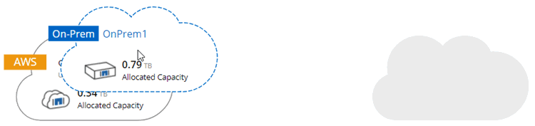
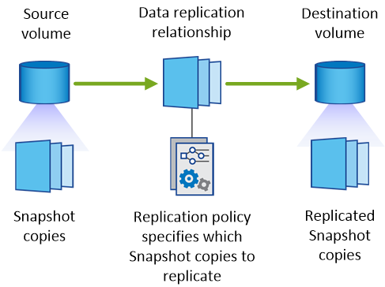
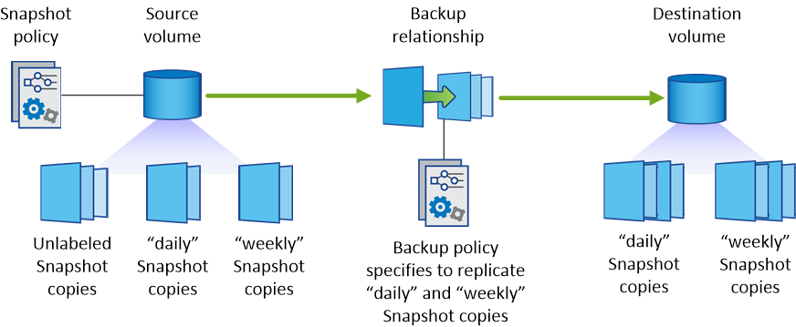

要求變更文件
要求變更文件 編輯此頁面
編輯此頁面 瞭解如何作出貢獻
瞭解如何作出貢獻在系統之間複寫資料
您可以選擇一次性資料複寫來進行資料傳輸、或是選擇重複排程來進行災難恢復或長期保留、以便在不同的工作環境之間複寫資料。例如、您可以設定內部 ONTAP 系統的資料複寫、以 Cloud Volumes ONTAP 供災難恢復之用。
Cloud Manager 使用 SnapMirror 和 SnapVault SnapMirror 技術、簡化不同系統上磁碟區之間的資料複寫。您只需識別來源磁碟區和目的地磁碟區、然後選擇複寫原則和排程即可。Cloud Manager 會購買所需的磁碟、設定關係、套用複寫原則、然後在磁碟區之間開始基礎傳輸。

|
基礎傳輸包含來源資料的完整複本。後續傳輸包含來源資料的差異複本。 |
Cloud Manager 可在下列工作環境類型之間進行資料複寫：
-
從 Cloud Volumes ONTAP 一個系統到 Cloud Volumes ONTAP 另一個系統
-
在一個不同時的系統和內部的不一樣叢集之間 Cloud Volumes ONTAP ONTAP
-
從內部 ONTAP 的不二叢集到另一個內部 ONTAP 的不二叢集
資料複寫需求
在複寫資料之前、您應該確認 Cloud Volumes ONTAP 是否同時滿足關於功能性的要求、包括功能性的系統和 ONTAP 功能性的叢集。
- 版本需求
-
在複寫資料之前、您應該先確認來源和目的地磁碟區是否執行相容 ONTAP 的功能性更新。如需詳細資訊、請參閱 "資料保護電源指南"。
- 具體需求 Cloud Volumes ONTAP
-
-
執行個體的安全性群組必須包含必要的傳入和傳出規則：特別是 ICMP 和連接埠 11104 和 11105 的規則。
這些規則包含在預先定義的安全性群組中。
-
若要在 Cloud Volumes ONTAP 不同子網路中的兩個子網路之間複寫資料、必須將子網路路由在一起（這是預設設定）。
-
若要在 Cloud Volumes ONTAP AWS 中的某個系統和 Azure 中的某個系統之間複寫資料、您必須在 AWS VPC 和 Azure vnet 之間建立 VPN 連線。
-
- 特定於叢集的需求 ONTAP
-
-
必須安裝主動式 SnapMirror 授權。
-
如果叢集位於內部部署環境中、您應該要從公司網路連線到 AWS 或 Azure 、後者通常是 VPN 連線。
-
叢集必須符合額外的子網路、連接埠、防火牆和叢集需求。 ONTAP
如需詳細資訊、請參閱叢集與 SVM 對等快速指南、以瞭解您的 ONTAP 版本的資訊。
-
設定系統之間的資料複寫
您 Cloud Volumes ONTAP 可以選擇一次性資料複寫、 ONTAP 以協助您在雲端之間來回移動資料、或是循環排程、藉此協助災難恢復或長期保留資料、藉此複寫資料。
Cloud Manager 支援簡單易用、可展開及串聯的資料保護組態：
-
在簡單的組態中、從磁碟區 A 複寫到磁碟區 B
-
在扇出組態中、從磁碟區 A 複寫到多個目的地。
-
在串聯組態中、從磁碟區 A 複寫到磁碟區 B 、從磁碟區 B 複寫到磁碟區 C
您可以在 Cloud Manager 中設定「展開」和「串聯」組態、方法是在系統之間設定多個資料複寫。例如、將磁碟區從系統 A 複寫到系統 B 、然後將相同的磁碟區從系統 B 複寫到系統 C
-
在「工作環境」頁面上、選取包含來源磁碟區的工作環境、然後將其拖曳至您要複寫磁碟區的工作環境：

-
如果出現「來源與目的地對等處理設定」頁面、請選取叢集對等關係的所有叢集間生命體。
叢集間網路的設定應讓叢集對等端點具有 _ 配對式全網狀連線 _ 、這表示叢集對等關係中的每一對叢集在其所有叢集間生命體之間都具有連線能力。
如果 ONTAP 來源或目的地是包含多個 lifs 的 Sourc時 叢集、就會出現這些頁面。
-
在「來源 Volume 選取」頁面上、選取您要複寫的磁碟區。
-
在「目的地 Volume Name and Tiering 」（目的地磁碟區名稱與分層）頁面上、指定目的地磁碟區名稱、選擇基礎磁碟類型、變更任何進階選項、然後按一下 * 繼續 * 。
如果目的地是 ONTAP 一個不必要的叢集、您也必須指定目的地 SVM 和 Aggregate 。
-
在「最大傳輸率」頁面上、指定資料傳輸的最大傳輸率（以百萬位元組 / 秒為單位）。
-
在「複寫原則」頁面上、選擇其中一個預設原則、或按一下 * 其他原則 * 、然後選取其中一個進階原則。
如需協助、請參閱 "選擇複寫原則"。
如果您選擇自訂備份 SnapVault （英文）原則、則與原則相關的標籤必須符合來源 Volume 上 Snapshot 複本的標籤。如需詳細資訊、請參閱 "備份原則的運作方式"。
-
在「排程」頁面上、選擇一次性複本或週期性排程。
有多個預設排程可供使用。如果您想要不同的排程、則必須使用 System Manager 在 destination 叢集上建立新的排程。
-
在「檢閱」頁面上、檢閱您的選擇、然後按一下「 * 執行 * 」。
Cloud Manager 會啟動資料複寫程序。您可以在「複寫狀態」頁面中檢視複寫的詳細資料。
管理資料複寫排程和關係
在兩個系統之間設定資料複寫之後、即可從 Cloud Manager 管理資料複寫排程和關係。
-
在「工作環境」頁面上、檢視工作區或特定工作環境中所有工作環境的複寫狀態：
選項 行動 工作區中的所有工作環境
在 Cloud Manager 頂端、按一下 * Replication * 。
特定的工作環境
開啟工作環境、然後按一下 * 複製 * 。
-
檢閱資料複寫關係的狀態、確認它們是否健全。
如果關係的狀態為閒置且鏡射狀態未初始化、則您必須從目的地系統初始化關係、以便根據定義的排程進行資料複寫。您可以使用 System Manager 或命令列介面（ CLI ）初始化關係。當目的地系統故障後恢復連線時、這些狀態可能會出現。 -
選取來源 Volume 旁的功能表圖示、然後選擇其中一個可用的動作。

下表說明可用的動作：
行動 說明 中斷
中斷來源與目的地磁碟區之間的關係、並啟動目的地磁碟區以進行資料存取。當來源磁碟區因資料毀損、意外刪除或離線狀態等事件而無法提供資料時、通常會使用此選項。如需設定目的地 Volume 以存取資料及重新啟動來源 Volume 的相關資訊、請參閱 ONTAP 《發揮作用》《發揮作用》（《更新指南》）《 9 Volume Disaster Recovery Express 指南》（英文）。
重新同步
重新建立磁碟區之間的中斷關係、並根據定義的排程恢復資料複寫。

當您重新同步磁碟區時、目的地磁碟區上的內容會被來源磁碟區上的內容覆寫。 若要執行反向重新同步、將目的地磁碟區的資料重新同步至來源磁碟區、請參閱 "《》《 9 Volume Disaster Recovery Express 指南》 ONTAP"。
反轉重新同步
反轉來源與目的地磁碟區的角色。來自原始來源 Volume 的內容會被目的地 Volume 的內容覆寫。當您想要重新啟動離線的來源 Volume 時、這很有幫助。在上次資料複寫與停用來源磁碟區之間寫入原始來源磁碟區的任何資料都不會保留。
編輯排程
可讓您選擇不同的資料複寫排程。
原則資訊
顯示指派給資料複寫關係的保護原則。
編輯最大傳輸率
可讓您編輯資料傳輸的最大速率（以每秒 KB 為單位）。
更新
開始遞增傳輸以更新目的地 Volume 。
刪除
刪除來源與目的地磁碟區之間的資料保護關係、這表示磁碟區之間不再發生資料複寫。此動作不會啟動目的地 Volume 以進行資料存取。如果系統之間沒有其他資料保護關係、此動作也會刪除叢集對等關係和儲存虛擬機器（ SVM ）對等關係。
選取動作之後、 Cloud Manager 會更新關係或排程。
選擇複寫原則
在 Cloud Manager 中設定資料複寫時、您可能需要協助選擇複寫原則。複寫原則定義儲存系統如何將資料從來源磁碟區複寫到目的地磁碟區。
複寫原則的功能
這個作業系統會自動建立稱為 Snapshot 複本的備份。 ONTAPSnapshot 複本是磁碟區的唯讀映像、可在某個時間點擷取檔案系統的狀態。
當您在系統之間複寫資料時、會將 Snapshot 複本從來源磁碟區複寫到目的地磁碟區。複寫原則會指定要從來源磁碟區複寫到目的地磁碟區的 Snapshot 複本。

|
複寫原則也稱為「 _protection 」原則、因為它們採用 SnapMirror 和 SnapVault SnapMirror 技術、可提供災難恢復保護、以及磁碟對磁碟備份與還原。 |
下圖顯示 Snapshot 複本與複寫原則之間的關係：

複寫原則類型
複寫原則有三種類型：
-
Mirror 原則會將新建立的 Snapshot 複本複寫到目的地 Volume 。
您可以使用這些 Snapshot 複本來保護來源磁碟區、以便做好災難恢復或一次性資料複寫的準備。您可以隨時啟動目的地 Volume 以進行資料存取。
-
_Backup 原則會將特定的 Snapshot 複本複寫到目的地磁碟區、通常會將它們保留較長的時間、而不會超過來源磁碟區的時間。
當資料毀損或遺失時、您可以從這些 Snapshot 複本還原資料、並保留這些複本以符合標準及其他治理相關用途。
-
鏡射與備份原則提供災難恢復與長期保留。
每個系統都有預設的鏡射與備份原則、適用於許多情況。如果您發現需要自訂原則、可以使用 System Manager 建立自己的原則。
下列影像顯示鏡射與備份原則之間的差異。鏡射原則會鏡射來源磁碟區上可用的 Snapshot 複本。

備份原則通常會保留快照複本的時間比保留在來源磁碟區上的時間長：

備份原則的運作方式
與鏡射原則不同的是、備份 SnapVault （鏡射）原則會將特定的 Snapshot 複本複本複寫到目的地 Volume 。如果您想要使用自己的原則而非預設原則、請務必瞭解備份原則的運作方式。
瞭解 Snapshot 複本標籤與備份原則之間的關係
Snapshot 原則定義系統如何建立 Volume 的 Snapshot 複本。原則會指定何時建立 Snapshot 複本、保留多少複本、以及如何標記複本。例如、系統可能會每天在上午 12 ： 10 建立一個 Snapshot 複本、保留兩個最近的複本、並將其標示為「每日」。
備份原則包含指定要複寫到目的地 Volume 的標示 Snapshot 複本、以及要保留多少複本的規則。備份原則中定義的標籤必須符合 Snapshot 原則中定義的一或多個標籤。否則、系統將無法複寫任何 Snapshot 複本。
例如、包含「每日」和「每週」標籤的備份原則、會導致複寫僅包含這些標籤的 Snapshot 複本。不會複寫其他 Snapshot 複本、如下列映像所示：

預設原則和自訂原則
預設的 Snapshot 原則會建立每小時、每日和每週 Snapshot 複本、保留六個每小時、每天兩個和每週兩個 Snapshot 複本。
您可以將預設的備份原則與預設的 Snapshot 原則輕鬆搭配使用。預設的備份原則會複寫每日和每週的 Snapshot 複本、保留七個每日和每 52 個每週 Snapshot 複本。
如果您建立自訂原則、則這些原則所定義的標籤必須相符。您可以使用 System Manager 建立自訂原則。
資料複寫從 NetApp HCI 功能複寫到 Cloud Volumes ONTAP 功能
如果您嘗試將資料從 NetApp HCI 功能性的資料複製到 Cloud Volumes ONTAP 功能性的更新、可以在 NetApp HCI 執行 NetApp Element SnapMirror 軟體的功能性系統上執行。或者、您也可以將資料複寫到 ONTAP Select 以 NetApp HCI 虛擬來賓身分執行的一套解決方案、以 Cloud Volumes ONTAP 供選擇的功能、建立在以虛擬來賓身分執行的作業系統上。
如需詳細資料、請參閱下列技術報告：